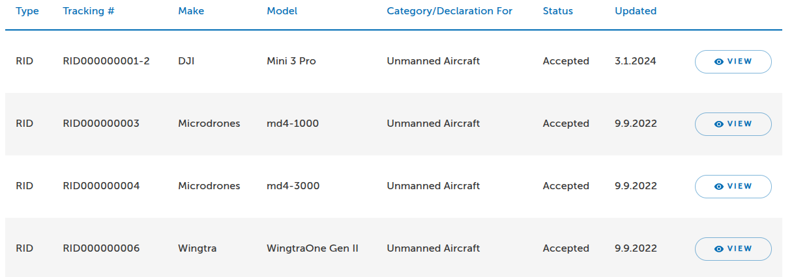
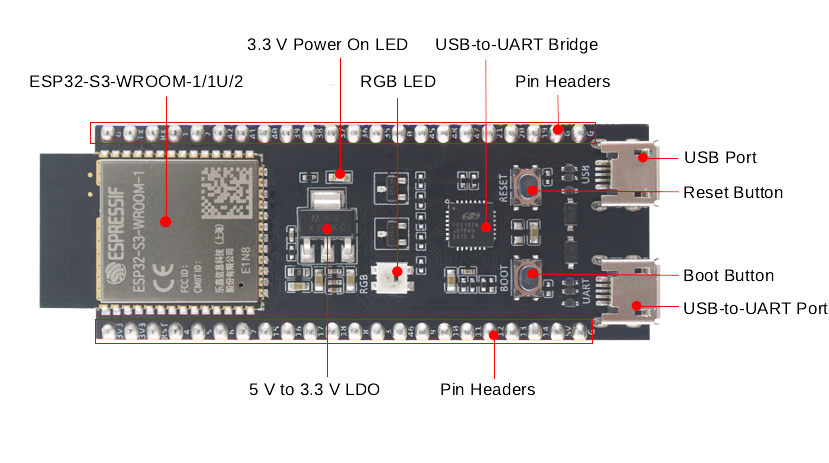
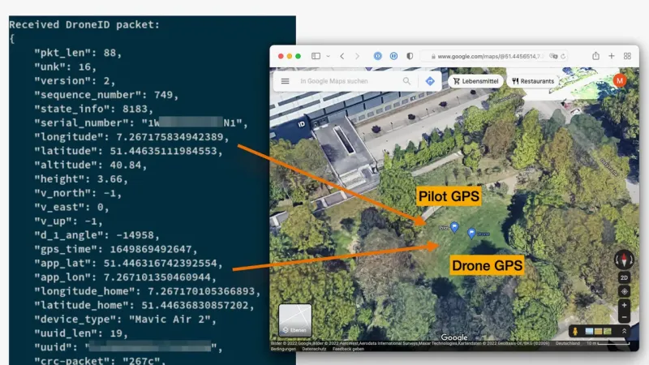
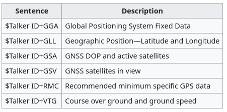

PRESENTATION30 minutes
Day 2 – RF Communications
Hack Our Drone Workshop — Dark Wolf Solutions
Beginner framing: Remote ID is a digital license plate for drones. Just as a car broadcasts its plate to anyone who looks, a drone must now continuously announce who it is and where it (and its pilot) are — over WiFi or Bluetooth — so police and other aircraft can identify it. Great for accountability; a privacy and spoofing problem for security, because that broadcast is plaintext and unsigned.
Regulatory basis (USA):
FAA 14 CFR Part 89 — the Remote ID rule
Manufacturers had to build RID into new drones by Sept 16, 2022
Operator compliance date was Sept 16, 2023, with FAA enforcement discretion extended to March 16, 2024
Applies to all drones requiring registration (>250 g), from takeoff to shutdown
Why it matters for security:
Remote ID is designed to identify drones — but it is not authenticated (nothing proves the broadcast is genuine)
Remote ID data can be spoofed (fake drones), suppressed (go dark), or used to track the operator's location
From takeoff to shutdown, Remote ID broadcasts:
| Data Field | Description |
|---|---|
| Drone serial number | FAA-registered UAS ID |
| Drone location | GPS latitude / longitude |
| Drone altitude | Above ground or sea level |
| Drone velocity | Speed and direction |
| Takeoff location | GPS coordinates of launch point |
| Time mark | UTC timestamp |
Broadcast methods:
WiFi Beacon (802.11n/ac/ax) — 2.4 or 5 GHz
Bluetooth 4 LE advertising (BLE 4 Legacy or Extended Advertising)
Bluetooth 5 Long Range (for extended range)

The FAA maintains a searchable database of Remote ID compliant drones:
https://uasdoc.faa.gov/listDocs?docType=rid&status=accepted
Searchable by serial number, manufacturer, and model
Used to verify whether a drone's Remote ID serial number is legitimate
Security implication: An attacker can broadcast a spoofed serial number that appears in the FAA database — creating a false identity for an unauthorized drone.
ArduPilot supports Remote ID via an external ESP32 module:

ESP32-C3 or ESP32-S3 development boards (this is the exact board you flash and sniff in Lab 14)
Connected to autopilot via MAVLink (USB, serial, or DroneCAN)
Receives position and identity data from ArduPilot over MAVLink
Broadcasts via WiFi Beacon and/or BLE
Firmware: ArduRemoteID-ESP32C3_DEV.bin (provided in workshop files)
# Flash the ESP32-C3 with ArduRemoteID
esptool.py --port /dev/ttyUSB0 write_flash 0x0 ArduRemoteID-ESP32C3_DEV.bin
DJI DroneID is DJI's proprietary Remote ID implementation.

Broadcasts on WiFi channel alongside the drone's control link
Initially undocumented — reverse engineered by the community (2023)
Includes: drone serial number, location, velocity, pilot location, home location
Security research findings:
DroneID was decoded by researchers without DJI authorization
Location data is broadcast unencrypted — including the operator's GPS location, not just the drone's
Suppression tools exist (e.g., CIAJeepDoors) but are unreliable:
Open Drone ID is the open standard (ASTM F3411) implemented by non-DJI manufacturers.
Protocol layers:
WiFi Beacon (802.11 management frames)
Bluetooth 4 Legacy Advertising
Bluetooth 5 Long Range + Extended Advertising
Relevant implementations:
opendroneid/transmitter-linux — transmit from a Raspberry Pi or laptop
ArduRemoteID — transmit from ESP32 attached to drone
OpenDroneID Android app — receive and display Remote ID data
| Vulnerability | Description | Impact |
|---|---|---|
| No authentication | Serial number is not cryptographically signed | Spoofing |
| Unencrypted | All data is in plaintext | Tracking |
| Takeoff location broadcast | Reveals operator's location | Privacy |
| Suppression tools | Broadcasting NULL/fake data | Evasion |
| Replay | Rebroadcast a captured packet | Identity theft |
Remote ID relies on GPS for position data. Understanding GPS is key.
Constellations and frequencies:
| System | Country | L1 Frequency |
|---|---|---|
| GPS | USA | 1575.42 MHz |
| GLONASS | Russia | 1598–1606 MHz |
| BeiDou | China | 1561.1 MHz |
| Galileo | EU | 1575.42 MHz |
| QZSS | Japan | 1575.42 MHz |

NMEA 0183 protocol:
ASCII-based serial protocol (RS-422, 4800/38400 baud)
Standard output from consumer GNSS receivers
Messages: $GPGGA (position), $GPRMC (recommended minimum), $GPGSV (satellite info)
Example:
$GPGGA,123519,4807.038,N,01131.000,E,1,08,0.9,545.4,M,46.9,M,,*47
u-blox u-center:
GUI configuration tool for u-blox GNSS modules (NEO-7, M8, M9)
Can configure satellite constellations, output rate, protocols
Used to inspect 3DR Solo GPS module behavior
Why GPS is so easy to fool: the satellites are ~20,000 km away, so by the time their signal reaches the ground it is incredibly faint — about -130 dBm, weaker than the background noise. The receiver just trusts the strongest matching signal it hears. An attacker on the ground, only meters away, can easily transmit a stronger fake — and the drone happily believes it. There's no password on GPS to check.
GPS signals are:
Unencrypted
Unauthenticated
Very weak (-130 dBm at receiver)
Spoofing attack:
Transmit stronger false GPS signals on 1575.42 MHz
The receiver locks onto the spoofed signal
Drone flies to spoofed coordinates or reports false position in Remote ID
Tools: SDR (HackRF or USRP), GPS signal generation software (e.g., gps-sdr-sim)
Defenses:
Multi-constellation GNSS (harder to spoof all simultaneously)
Inertial navigation fallback
Drone-to-drone cooperative positioning
Galileo OSNMA (Open Service Navigation Message Authentication) — in rollout
| Topic | Key Point |
|---|---|
| Remote ID | FAA-mandated broadcast — serial, location, velocity, takeoff point |
| Authentication | None — Remote ID serial numbers are spoofable |
| DJI DroneID | Reverse engineered — suppression tools exist but unreliable |
| Open Drone ID | ASTM standard — WiFi Beacon / BLE |
| GPS | Unencrypted and unauthenticated — spoofable with SDR |
| NMEA 0183 | Standard GPS output format — used in 3DR Solo |